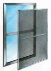

|  |
(Screenwm) |
Screenwm is a window management extension to GNU Screen that adds (1) multiple region layouts within a single session, (2) vi-like movement within complex layouts, (3) window associations by region, and (4) control of remote/embedded sessions using standard key bindings. Although not required, Screenwm is intended to be used with the Screen vertical split patch available at http://fungi.yuggoth.org/vsp4s, which is not yet a part of the standard Screen distribution.
In Screen, a single terminal can be divided up into a set of regions constructed from arbitrary horizontal and vertical splits. Each region displays one particular window at a time from the set of windows shared across all regions. The window in each region can be changed as desired. With the introduction of vertical splits, there are several problems with this model.
First, the basic up/down region focus model becomes impractical as even though two regions might be right next to each other, the user may have to cycle through numerous other regions just to change between the two.
Second, the basic Screen model of a pool of windows shared among all regions does not match typical usage patterns. With the introduction of cheap widescreen displays, users typically have many different terminals side-by-side, each running a separate instance of Screen. With vertical splits, multiple terminals can be multiplexed in a single full-width terminal, which provides many advantages such as movement/cut-paste between windows without the use of the mouse and multiple remote windows displayed simultaneously through a single SSH connection. When this is done, however, the natural separation provided by individual Screen instances is lost and the user must now manage and cycle through the complete set of windows.
Third, use of remote Screen sessions is a hassle as the Screen escape key must be depressed twice to send a command to the remote session. Alternatively, the user can define a different key binding that sends two escape sequences, but then must remember to use the other binding when working with the other session while using the normal binding the rest of the time.
Finally, Screen can only work with one region layout at a time and layouts must be manually managed by the user by combining then resplitting the main terminal. Thus, for example, if the user wishes to switch between a set of remote side-by-side windows running in a remote Screen session to a set of local side-by-side windows running in the local session, they must manually split the terminal, then in each region, must manually select the window that they wish to work with. Quick transitions between the two layouts is impossible as this tedious process must be done every time.
Enter Screenwm. Screenwm solves all of these problems using an external Perl executable and a set of Screen key bindings. All basic Screen operations are intercepted by key bindings and fed to Screenwm, which keeps track of Screen's state in an external directory structure. Screenwm then uses this information to derive an appropriate Screen command sequence, which is fed back to the Screen session. Using this information, Screenwm can manage multiple region layouts simultaneously with instant and automatic transitions between them. It allows vi-like movement between regions using a single keypress no matter how many regions it is actually cycling through. It provides windows associated to regions instead of to a session, thus facilitating typical usage patterns. Finally, it allows a window to be tagged as a remote/embedded Screen session, which allows the same key bindings used for local Screen control to be passed on when appropriate to the remote session, thereby allowing the user to transparently work across multiple sessions.
This project is similar to minimal X11 window managers such as Ratpoison. The advantage, however, is that it does not require an X11 session. Thus, complex terminal window layouts can be utilized remotely with just a single SSH connection, which is ideal for administration of remote servers or accessing hosts at work/home from home/work.